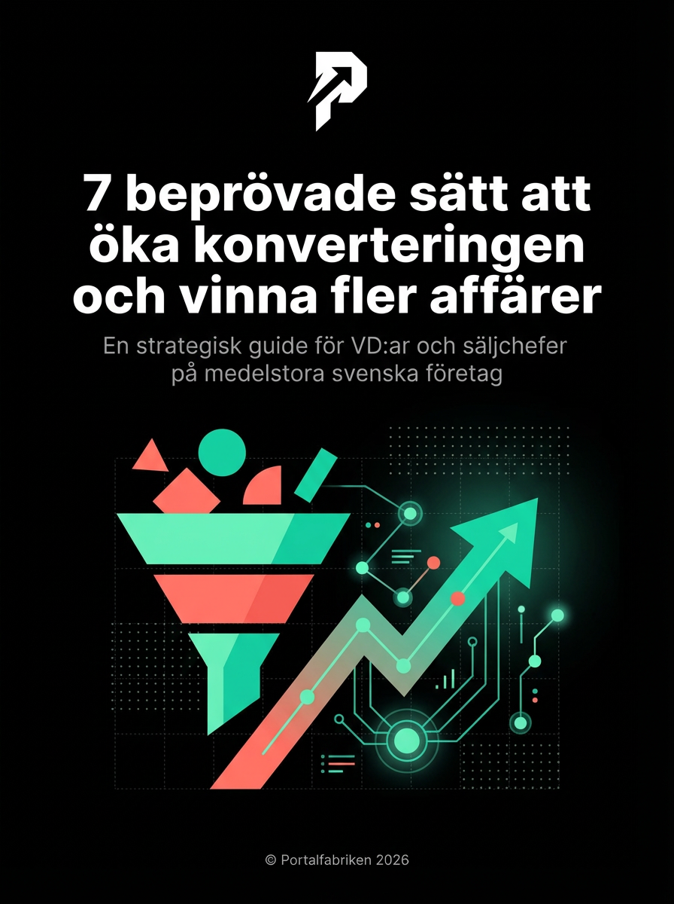

Tack! Din guide är redo.
Klicka på knappen nedan för att ladda ner din kostnadsfria guide med 7 beprövade sätt att öka konverteringen.

7 beprövade sätt att öka konverteringen och vinna fler affärer
En strategisk guide för VD:ar och säljchefer på medelstora svenska företag
Ladda ner PDF (Gratis)PDF • 26 sidor • 2.5 MB
Vad händer nu?
- 1 Läs guiden och identifiera de områden där ni har störst potential
- 2 Välj 1-2 strategier att implementera först – börja med "3 saker du kan göra imorgon"
- 3 Vill du ha hjälp med implementeringen? Boka ett kostnadsfritt strategisamtal
Redo att ta nästa steg?
Se hur vi kan hjälpa er